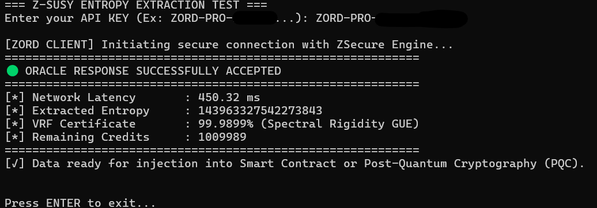

Z-Omni Revolution Development
Soberanía Tecnológica e Integridad Digital de Alta Densidad
ZORD SpA se dedica a la protección y auditoría de activos digitales críticos mediante el motor criptográfico Z-Core Engine. La infraestructura está orientada a la inmutabilidad y el no repudio, con sellos digitales bajo el estándar post-cuántico FIPS 204 (ML-DSA-44).
Los procesos de certificación de integridad documental se alinean con la Ley 19.799 sobre Documentos Electrónicos y Firma Electrónica en Chile.
Firma de documentos bajo el estándar del NIST (FIPS 204). Integridad y resistencia frente a computación cuántica para resguardar el valor de contratos y archivos.
Consultas y coordinación por correo.
ContactarCredenciales criptográficas con entropía de alta densidad. El motor se evalúa con baterías estadísticas de la industria: NIST SP 800-22, Dieharder y ENT.
Orientado al blindaje de infraestructuras críticas, cifrado de bases de datos y autenticación en terminales de servidor.
Para requerimientos corporativos, escriba a la división Enterprise.
zord.spa@zord.clOráculo de aleatoriedad verificable, orientado a contratos inteligentes.
Números aleatorios criptográficamente seguros y resistentes a computación cuántica para dApps, protocolos DeFi, colecciones NFT, juegos on-chain u otras aplicaciones que requieren aleatoriedad verificable.

| Componente | Tecnología / estándar | Estado |
|---|---|---|
| Motor criptográfico Z-Core | C++ / FIPS 204 (ML-DSA) | REFERENCIA |
| Registro de operaciones | PostgreSQL / SQLAlchemy | INTERNO |
| Notificación segura | TLS 1.3 | ESTÁNDAR |